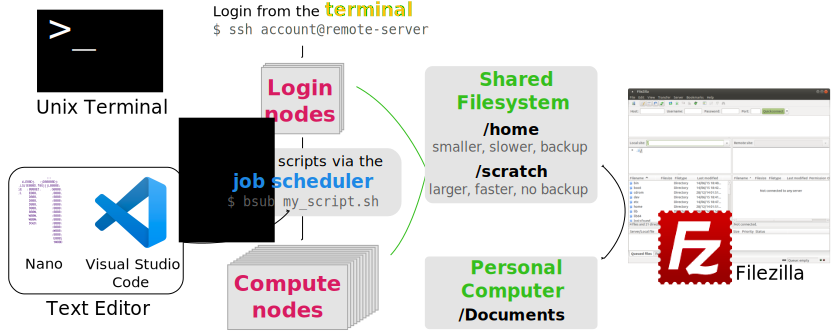
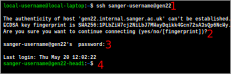
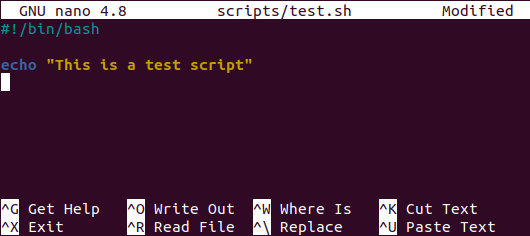

4 Working on the Farm
- Use different software tools to work on a remote server: terminal, text editor and file transfer software.
- Login to the farm and navigate its filesystems.
- Edit scripts on the HPC using Nano.
- Move files in and out of the farm using Filezilla or
rsync/scp.

4.1 Connecting to the HPC
All interactions with the farm happen via the terminal (or command line). To connect to the HPC we use the program ssh. The syntax is:
ssh your-hpc-username@hpc-server-addressOn the Sanger Farm there are two servers:
farm22is the main HPC, which you can only access after attending the required Farm and Data Management courses.gen22is a test environment, providing a smaller smaller HPC similar in structure to the largerfarm22. This is useful to learn about the Farm and is what we will use in these materials. Everyone with a Sanger ID has access togen22.
To log onto the Sanger Farm you can use the SSH command:
ssh sanger-username@gen22-loginThe Sanger service desk has set up your laptop to assume your Sanger ID, so you can use the simplified command to access the Farm:
ssh gen22The first time you connect to an HPC, you may receive a message about the ECDSA key fingerprint. By typing yes you’ll add the ‘fingerprint’ of this HPC to your local computer’s saved list of approved hosts.
After running this ssh command and approving any ECDSA key questions, you will be asked for your Sanger password and after typing it you will be logged in to the Farm.

1) Use the
ssh program to login to gen22/farm22. 2) If prompted, approve ECDSA key fingerprint by typing “yes”.
3) Type your Sanger password. Note that as you type the password, nothing shows on the screen - that’s normal, the terminal is recording your password!
4) You will receive a login message and notice that your terminal will now indicate your Sanger username and the name of the server you connected to.
4.1.1 Exercise
4.2 Editing Scripts Remotely
Most of the work you will be doing on a HPC is editing script files. These may be scripts that you are developing to do a particular analysis or simulation, for example (in Python, R, Julia, etc.). But also - and more relevant for this course - you will be writing shell scripts containing the commands that you want to be executed on the compute nodes.
There are several possibilities to edit text files on a remote server. A simple one is to use the program Nano directly from the terminal. This is a simple text editor available on most linux distributions, and what we will use in this course.
Although Nano is readily available and easy to use, it offers limited functionality and is not as user friendly as a full-featured text editor. You can use other more full-featured text editors from the command line such as vim, but it does come with a steeper learning curve. Alternatively, we recommend Visual Studio Code, which is an open-source software with a wide range of functionality and several extensions, including an extension for working on remote servers.
4.2.1 Nano

To create a file with Nano you can run the command:
nano test.shThis opens a text editor, where you can type the code that you want to save in the file. Once we’re happy with our code, we can press Ctrl+O to write our data to disk. We’ll be asked what file we want to save this to: press Enter to confirm the filename. Once our file is saved, we can use Ctrl+X to quit the editor and return to the shell.
We can check with ls that our new file is there.

!#/bin/bash in the first line of the script. This is called a shebang and is a way to inform that this script uses the program bash to run the script.Note that because we saved our file with .sh extension (the conventional extension used for shell scripts), Nano does some colouring of our commands (this is called syntax highlighting) to make it easier to read the code.
4.2.2 Exercise
4.3 Summary
- The terminal is used to connect and interact with the HPC.
- To connect to the HPC we use
ssh username@remote-hostname.
- To connect to the HPC we use
- Nano is a text editor that is readily available on HPC systems.
- To create or edit an existing file we use the command
nano path/to/filename.sh. - Keyboard shortcuts are used to save the file (Ctrl + O) and to exit (Ctrl + X).
- To create or edit an existing file we use the command